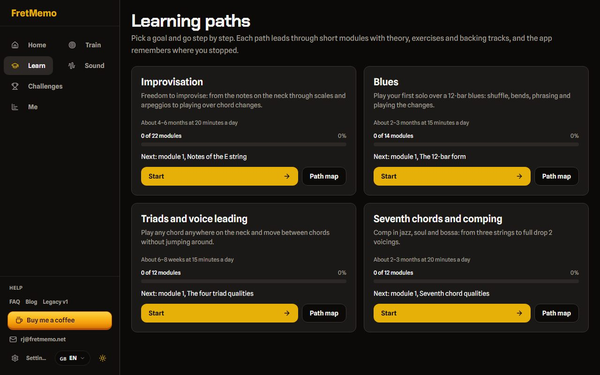

FretMemo is a free guitar fretboard trainer that runs in the browser. In November 2026 it has five fretboard drills, Guitar Pro songs you can loop, score and edit, an amp simulator, four learning paths, ear training, a rhythm trainer, theory tools, technique exercises and daily challenges. It costs nothing, there is no account, and your practice data stays in your browser.
In January I published a roadmap of what I was going to build. This is the follow-up: one short section per part of the app, each with a link to a longer post, and then a scorecard of what I promised against what exists.

Fretboard drills, still the core
The five drills are where FretMemo started: "Fretboard → Note", "Tab → Note", "Note → Tab", "Note Generator" and "Tab Sequence". The first three are quizzes. In the last two you play the prompt on your guitar and the microphone checks the note name. Every drill opens with "Session Setup" (tempo, metronome, count-in, fret range, strings), and SM-2 spaced repetition brings back the positions you miss. The tab highway, finger numbers and mic calibration are in the fretboard note trainer post.
Your Songs: Guitar Pro files you can play, loop and edit
In "Your Songs" on the Train page you can import .gp3, .gp4, .gp5, .gpx and .gp files. They play as notation and tab in the browser and stay on your device. More in the free Guitar Pro viewer post.
Once a song is open, "Loop" repeats a bar range, "Speed" goes from 0.5× to 1.5×, "Score with mic" gives each bar a hit rate and "Loop weak bars" loops the worst run of up to 4 bars. That method is in how to practice a song on guitar. "Edit mode" changes frets, rests, durations, bars, tempo and meter, and "Download .gp" saves the result, as covered in the free online guitar tab editor post.
Sound: one guitar sound for the whole app
The Sound page at fretmemo.net/sound sets the guitar sound every exercise plays through. It has 8 presets (7 built on NAM amp models), a "Tone designer", "Import .nam" for your own A2 model and "Live input" to play your own guitar through the active preset. Details in the free online amp simulator post.
Learn: four paths with backing loops
The Learn page groups short modules into paths. The Improvisation path has 22 modules from the notes of the E string to Giant Steps, with a placement test and backing loops in 9 styles. The Blues path has 14 modules, and its bend exercise uses the mic to measure in cents how far you bend. Triads and voice leading covers inversions on four string sets in 12 modules, and Seventh chords and comping teaches shell, drop 2 and drop 3 voicings in 12 more. "Verify with mic" is optional; without a mic you mark a loop passed yourself.
Ear training and the rhythm trainer
Ear Training has four modes, from finding a note you hear on the fretboard to naming scale degrees after a I-IV-V-I cadence (major keys only). You answer by clicking, with no microphone. See ear training for guitar.
Rhythm Dojo has "Tap the Beat", "Strum Patterns", "Rhythm Reading" and "Groove Lab". You tap the screen or the keyboard, never the guitar, and each hit is graded PERFECT within 30 ms, GOOD within 80 ms or OK within 140 ms. The modes and the score formula are in the guitar rhythm trainer post.
Theory, technique and challenges
Six theory tools sit on the Train page: Scale Explorer, Circle of Fifths, CAGED System, Triads on three string groups, Chord Library with 18 chord types, and Intervals on Fretboard.
Technique has six metronome-paced exercises: "Spider Walk", "Permutation Trainer" (24 finger patterns), "Linear Shifter", "Diagonal Patterns", "String Skipping" and "Legato Builder". Nothing checks what you play.
Challenges has a daily challenge that rotates through 7 types, worth 100 XP, and 6 hunts: Perfect Session, Speed Demon, Explorer, "60s Blitz", "Survival Mode" and "Find All A".
The January roadmap, item by item
Shipped:
- Streaks with freezes. You earn one per 7 streak days, and a freeze covers a single missed day.
- The fretboard heat map, as "Heat Map Overlay" in practice and as an accuracy fretboard on the Progress page.
- Focus on part of the neck, as "Fret Range" and "Strings" in Session Setup rather than a separate mode.
- SM-2 spaced repetition, on by default.
- Ear training, plus Functional Ear, which I hadn't promised.
- Alternate tunings: 14 presets, including 7- and 8-string, bass and ukulele.
- Scale and chord visualization, as Scale Explorer and Chord Library.
- Survival mode and the 60-second blitz, as challenge hunts.
- PWA install and offline use.
- Data export and import, as "Progress Backup".
Partly shipped:
- Badges. There are 6 (First Steps, Week Warrior, Monthly Master, Perfect Session, Speed Demon, Fretboard Explorer), and none of the examples I gave in January.
- Daily challenges. Seven types rotate, without "Precision Practice" and "Position Challenge".
- XP and levels exist, with a streak multiplier. I said they would be optional, and only the pop-ups are: "Show XP Animations" hides them.
- Find All Notes is one hunt, "Find All A", fixed to the note A.
- The 60s Blitz keeps no best score of its own. The session summary only flags a new overall accuracy best.
- There is no speed ladder mode. "Auto Speed-Up" in Session Setup does the same job: +5 BPM every 8 beats by default.
Not built: the custom tuning where you set each string yourself. "Custom (Current)" sits in the tuning list, but there is no per-string editor. The switch to hide fret numbers is there too, and it isn't working yet.
Platform: free, no account, data in your browser
- Free, with no login. Settings has a "Buy me a coffee" link.
- Progress, settings, songs, sound presets and imported models live in your browser's localStorage and IndexedDB.
- "Progress Backup" in Settings exports and imports your progress. As far as I can tell from the code, learning-path progress, rhythm bests, songs and sound presets are not in that file.
- It installs as a PWA, and the app shell works offline. Song playback with the soundfont works offline after one online session, because the soundfont is cached on first use. The Sound page's samples and amp models are only partly cached, with 12 files kept, so I can't promise the full guitar sound offline.
- English and Polish, picked from your browser language with English as the fallback.
- The site loads Google Analytics and Amplitude with session replay.
Where to start
- Open fretmemo.net and go to "Train".
- Under "Fretboard Drills", pick "Fretboard → Note".
- In "Session Setup", narrow "Fret Range" to the first five frets, set "Notes" to "Naturals" and press "Start".
- When that feels easy, widen the range, then try "Note Generator" with "Microphone Input" on.
- Click "Learn" and press "Start →" on the path that matches what you want to play.
- Every few weeks, open Me → Settings → "Data" and press "Export Progress".
If you only want to learn guitar fretboard notes, the first four steps are the whole job.
FAQ
Is there a free guitar fretboard trainer without an account?
Yes. FretMemo runs in the browser at fretmemo.net, costs nothing and has no login. Your progress, settings and imported songs are stored in your own browser.
What is a good fretboard memorization game?
Look for drills in both directions, from a position to its note name and from a note name to a position, plus a way to play the notes on a real guitar. FretMemo has five such drills, two of them checked by the microphone, and challenge hunts such as 60s Blitz and Survival Mode. It is free in the browser.
Does FretMemo work offline?
Mostly, once it has loaded. FretMemo installs as a PWA and the app shell is cached. Song playback with the soundfont works offline after one online session, because the soundfont is cached on first use. The Sound page's samples and amp models are only partly cached, with 12 files kept, so the full guitar sound may not work offline.
Did FretMemo ship its 2026 roadmap?
Most of it. Streak freezes, the heat map, fret and string focus, SM-2, ear training, alternate tunings, the scale explorer, chord diagrams, the PWA and export/import shipped. Badges, daily challenge types, optional XP and Find All Notes shipped in part, and a per-string custom tuning editor was not built.
Open FretMemo
Start with a fretboard drill, then pick a learning path when the notes stop being the problem.
Open the fretboard trainer Free, no account, runs in the browser.